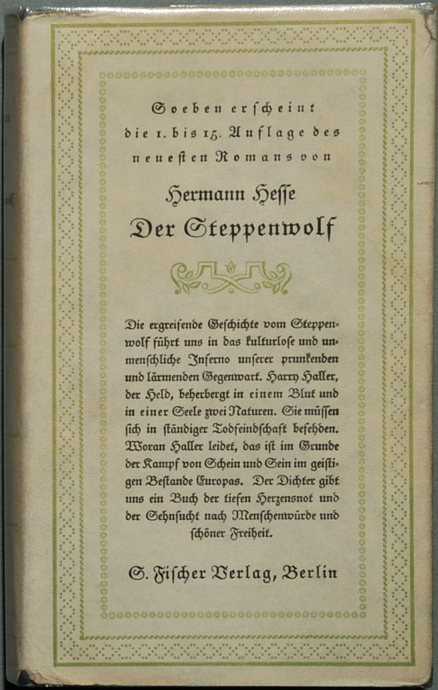
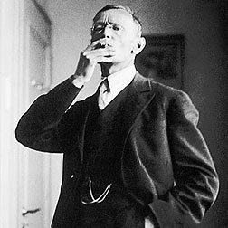
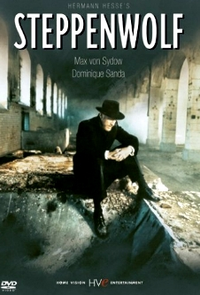

Steppenwolf
https://en.wikipedia.org/wiki/Steppenwolf_(novel)
  "STEPPENWOLF book cover(img01)
Hesse's Photo -Wikipedia(img02)
STEPPENWOLF Film(img03)"
Click on images to enlarge
The book is presented as a manuscript written by its protagonist, a middle-aged man named Harry Haller, who leaves it to a chance acquaintance, the nephew of his landlady. The acquaintance adds a short preface of his own and then has the manuscript published. The title of this "real" book-in-the-book is Harry Haller's Records (For Madmen Only). As the story begins, the hero is beset by reflections on his being ill-suited for the world of everyday, regular people, specifically for frivolous bourgeois society. In his aimless wanderings about the city he encounters a person carrying an advertisement for a magic theatre who gives him a small book, Treatise on the Steppenwolf. This treatise, cited in full in the novel's text as Harry reads it, addresses Harry by name and strikes him as describing himself uncannily. It is a discourse on a man who believes himself to be of two natures: one high, the spiritual nature of man; the other is low and animalistic, a "wolf of the steppes". This man is entangled in an irresolvable struggle, never content with either nature because he cannot see beyond this self-made concept. The pamphlet gives an explanation of the multifaceted and indefinable nature of every man's soul, but Harry is either unable or unwilling to recognize this. It also discusses his suicidal intentions, describing him as one of the "suicides": people who, deep down, knew they would take their own life one day. But to counter that, it hails his potential to be great, to be one of the "Immortals". By chance, Harry encounters the man who gave him the book, just as they have both attended a funeral. He inquires about the magic theater, to which the man replies, "Not for everybody." When Harry presses further for information, the man recommends a local dance hall, much to Harry's disappointment. When returning from the funeral, Harry meets a former academic friend with whom he had often discussed Oriental mythology, and who invites Harry to his home. While there, Harry is disgusted by the nationalistic mentality of his friend, who inadvertently criticizes a column Harry wrote. In turn, Harry offends the man and his wife by criticizing the wife's bust of Goethe, which Harry feels is too thickly sentimental and insulting to Goethe's true brilliance. This episode confirms to Harry that he is, and will always be, a stranger to his society. Trying to postpone returning home, where he fears all that awaits him is his own suicide, Harry walks aimlessly around the town for most of the night, finally stopping to rest at the dance hall where the man had sent him earlier. He happens upon a young woman, Hermine, who quickly recognizes his desperation. They talk at length; Hermine alternately mocks Harry's self-pity and indulges him in his explanations regarding his view of life, to his astonished relief. Hermine promises a second meeting, and provides Harry with a reason to live (or at least a substantial excuse to continue living) that he eagerly embraces. During the next few weeks, Hermine introduces Harry to the indulgences of what he calls the "bourgeois". She teaches Harry to dance, introduces him to casual drug use, finds him a lover (Maria) and, more importantly, forces him to accept these as legitimate and worthy aspects of a full life. Hermine also introduces Harry to a mysterious saxophonist named Pablo, who appears to be the very opposite of what Harry considers a serious, thoughtful man. After attending a lavish masquerade ball, Pablo brings Harry to his metaphorical "magic theatre", where the concerns and notions that plagued his soul disintegrate as he interacts with the ethereal and phantasmal. The Magic Theatre is a place where he experiences the fantasies that exist in his mind. The Theater is described as a long horseshoe-shaped corridor with a mirror on one side and a great number of doors on the other. Harry enters five of these labeled doors, each of which symbolizes a fraction of his life.